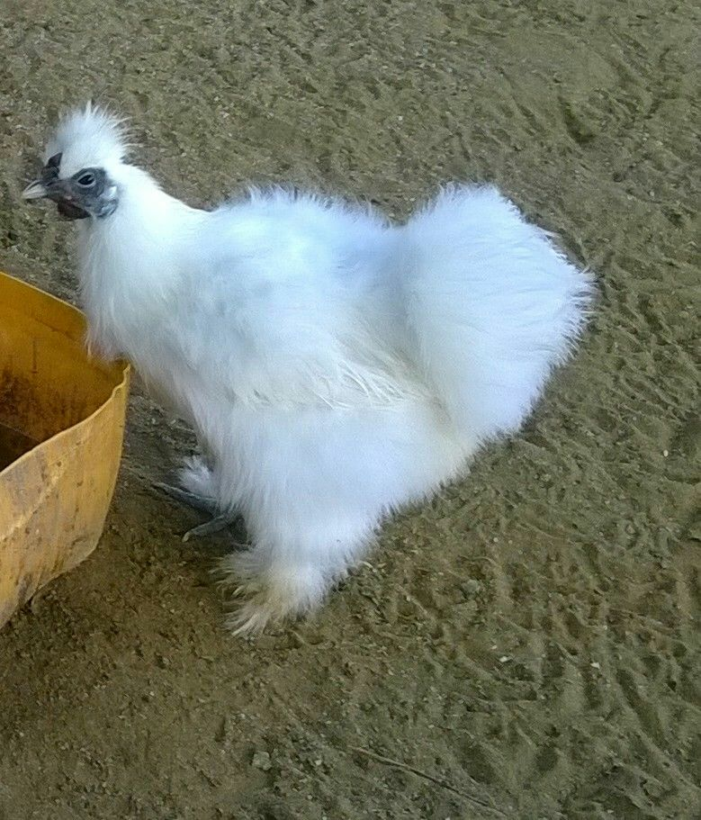

Silkie Bantams
Silkie bantams are one of the mort beautiful ornamental birds.Their black skin and feathers that feel much like hair make them one of our most unusual varieties of chickens.Our Silkies come both bearded and non-bearded. They are striking in appearance with their white plumage and mulberry colored comb, face, and wattles. We have a variety of colours ranging from black,white,brown,reddish and a mixture of the above colours